Introduction
Just as the name implies, the Terrain Painter is a tool built into
Torque 3D's World Editor which allows you to paint your terrain with
various materials, such as grass, dirt, rocks, and so on.
Like the rest of the editors, the Terrain Painter is a
WYSIWYG editor. As you change your terrain materials and paint the
surface, you can see what the changes will look like in real time as if
you were playing your game.
You can use the Terrain Painter to make wide-spread modification to a
blank terrain, or use finer and more detailed brushes to touch up
imported terrain layers/textures. Let's get started by setting up your
environment.
Setup
In order to follow along with this article you should generate a new project with the Full Template. This template ships with plenty of free assets for testing and learning. To save time and focus on this specific tools section of the documentation we are going to bypass asset creation and use the assets that come with that template.
You will want to remove the existing TerrainBlock since we will be creating a terrain from scratch for this article. To remove the existing terrain: switch to the Object Editor (F1); in the Scene Tree panel on the right of the screen click the Scene tab; click the arrow next to the MissionGroup folder to expand it; select the TerrainBlock entry labelled:
theTerrain:

Click on the trash can icon in the top of the tab to delete it, or press the Delete key.
(click to enlarge)

Now create a fresh terrain to use when following this article. From the main menu select File > Create Blank Terrain. The Create New Terrain dialog will appear. Enter
theTerrain as the name of your new TerrainBlock; set the resolution to 512; select the flat terrain option; and click the Create New button
You should now have a fresh flat TerrainBlock to use when following along with this article.
(click to enlarge)

Interface
The Terrain Painter interface is extremely simple to use. You can
open the Terrain Painter using one of two methods. One way is through
the file menu, clicking on Tools->Terrain Painter:
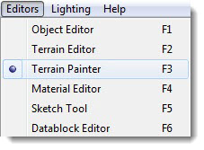
The other method is to click the Terrain Editor shortcut in the Toolbar:
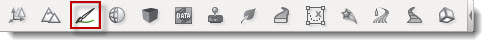
There are four main areas of the interface you will focus on while using this tool.
The Brush
Using the Terrain Painter is very similar to painting on a piece of paper with a brush except here you are painting on the terrain by dragging the mouse across the screen. Your brush is represented as a circle or a square in your scene's view. This visual outline allows you to know where your brush is located and what portion of the terrain it will affect when you move it.
(click to enlarge)
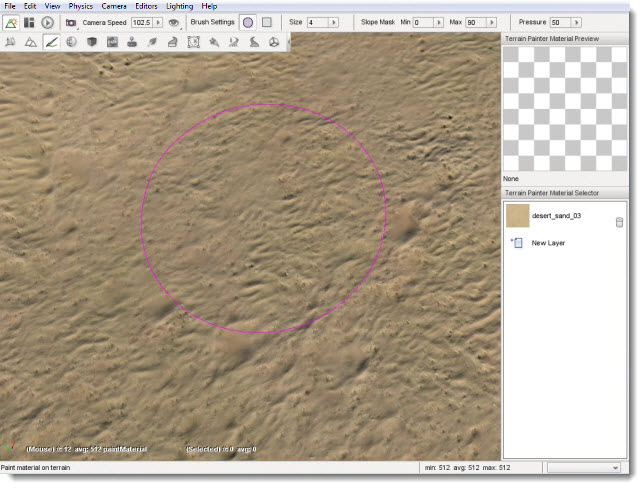
The image shown above is displaying the default brush style when you first open the Terrain Painter. If you wish to change your brush type, you can modify it via the Brush Settings found in the Tool Settings toolbar at the top of the screen. Brush Settings are only active while using the Terrain Painter.
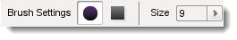
The first setting allows you to choose your brush shape. The
default option is a circle. If you click on the square shape, your
brush's grid will take on that appearance.
(click to enlarge)
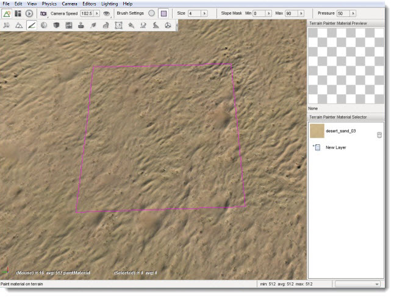
You will find the Brush Size slider next to the shape
settings. You can move the slider from left (smaller) to right (larger)
to change the size.
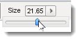
The stock value is typically small, usually a 9x9 grid. The
more you increase the slider value, the greater the grid will grow. The
change will add an equal number of rows and columns, as shown below.
(click to enlarge)
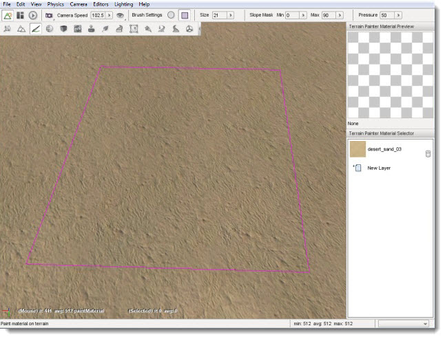
You can find the Terrain Painter palette docked on the right
side of the editor. This panel is similar to a traditional painter's
palette in the real world. Instead of swatches of color, the Terrain
Painter's palette is populated by TerrainMaterials which you use to
paint the terrain.
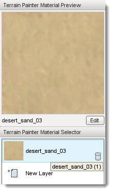
A TerrainMaterial is a collection of three textures combined into a single layer. The three textures are the base (also known as diffuse), detail, and normal map. A preview of which TerrainMaterial (or layer) is shown in the box at the top of the palette labeled Terrain Painter Material Preview.
Terrain Materials Editor
When you wish to add a new TerrainMaterial, click on the New Layer entry in the palette.
Once you click on the entry, the Terrain Materials Editor window will appear. This tool is completely separate from the basic Material Editor, as TerrainMaterials are structured and used much differently than other Torque 3D materials which are used on shapes in the world placed with the World Editor.
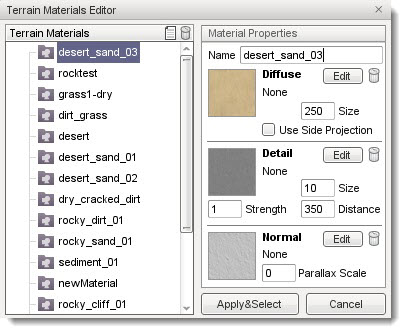
Terrain Materials:The TerrainMaterials list contains all the currently available textures for creating terrain materials.
New Button:Clicking the Page icon in the Terrain materials header creates a new TerrainMaterial entry for editing.
Delete Button:Clicking the Trash can icon in the Terrain materials headerdeletes the currently selected TerrainMaterial.
Apply & Select Button:Clicking this button closes the Terrain Materials Editor and returns to what ever operation brought you to the dialog, for the purposes of this article it returns you back to the Terrain Painter Material Selector and adds the selected TerrainMaterial as a new material ready to be used for painting.
Cancel Button: Close editor without making a choice.
Clicking on an entry in the Terrain Materials list updates the Material Properties pane on the right to display the current properties of that material.
Material Properties Pane
The Material Properties pane contains a Name field, which is used as the label assigned to the material and three sub-sections which describe the textures that define the material.
Name:Assigns the name of the TerrainMaterial which will appear in the Terrain Materials list.
Diffuse Sub-Section
Shows a preview and the properties of the materials Diffuse texture, which provides the color and base appearance of the material. The Diffuse texture is also commonly referred to as the Base texture for this reason.
Edit Button: Clicking this button allows you to select the texture to assign to this aspect of the material.
Trash Can Button: Clicking this button clears the texture that has been selected for this section.
Use Side Projection: Terrain textures are normally applied top-down, which can result in stretching. This toggle causes a material to smoothly merge and conform to steep terrain if needed.
Diffuse Size: Controls the physical size, in meters, of the base texture.
Detail Sub-Section:
Shows a preview and the properties of the materials Detail Map, which gives the material a more defined, crisp look. If you are familiar with advanced rendering concepts this is accomplished using additive blending and per-layer fade distance techniques.
Edit Button: Clicking this button allows you to select the texture to assign to this aspect of the material.
Trash Can Button: Clicking this button clears the texture that has been selected for this section.
Detail Size: How close the camera must be before the detail map begins rendering in meters.
Detail Distance: Determines how bold the detail appears on the base texture.
Normal Sub-Section:
Shows a preview and the properties of the materials Detail Map, which gives the material a more defined, crisp look. If you are familiar with advanced rendering concepts this is accomplished using additive blending and per-layer fade distance techniques.
Edit Button: Clicking this button allows you to select the texture to assign to this aspect of the material.
Trash Can Button: Clicking this button clears the texture that has been selected for this section.
Parallax Scale: Adjusts the intensity of the parallax depth in normal maps.
Painting
Before we begin painting, we will add a second TerrainMaterial to our palette (if the project you have open already has more than one feel free to skip this step).
To add a new material click the New Layer button in the Terrain Painter Material Selector. The Terrain Materials Editor will open. Click any TerrainMaterial in the list other than the one that is already in your palette, such as the "rocktest" material shown here.
(click to enlarge)
Once you have the material selected, click the Apply & Select button. Once you have done this, the new layer will have been added to your palette and available for painting.
This is a good time to take a look behind the scenes to understand a little of how Torque 3D organizes materials and how it uses them for other operations to your advantage.What you can not see in the interface is that the system has associated each of the TerrainMaterials in your palette with a numbered layer. Throughout these documents you will see, or may have already seen, that material layers are used to control aspects of object placement such as which layer automatic object placement will occur on.
If you started with a project that was created with the Full template and added the rocktest material in the last step then the system now considersgrass1 to be layer0 and rocktest to be layer1. This allows you, whenever asked, to select layers using something meaningful to you rather than remembering some random numbering system. When asked to select a layer you can simply pick the grass or rocktest layer from a list and the system will use and apply the proper numbered layer to perform the related operation.
All this becomes very important in reducing the amount of work that is needed to create realistic terrain. The TerrainMaterials that you apply with the Terrain Painter tool not only give the terrain the appearance of natural materials but they can be used to automatically generate and restrict foliage and other shapes when used in conjunction with objects such as GroundCover.
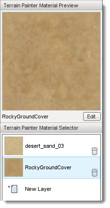
Now, on to learning to paint. Make sure you have the new material selected in the Terrain Painter Material Selector. So we can more easily see the modifications we are about to make, set your brush size to about 25.
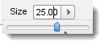
Now, find a section of the terrain you wish to paint. Here, we started in a corner of the TerrainBlock.
(click to enlarge)
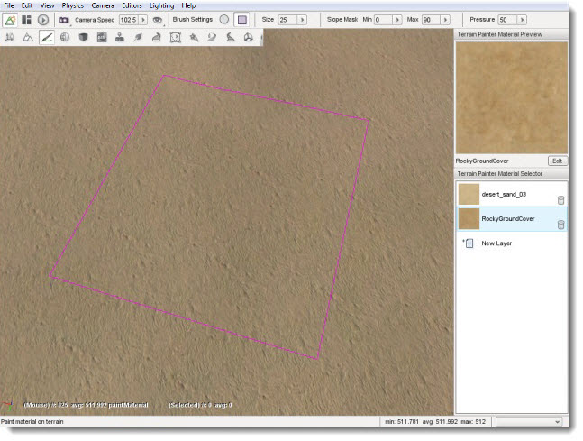
Click and hold down the left mouse button, then begin dragging the brush around the screen in a sweeping motion. The terrain will update in real time to reflect the painting of the new TerrainMaterial. When you let go of the mouse button, the Terrain Painter will stop laying down the material.
(click to enlarge)
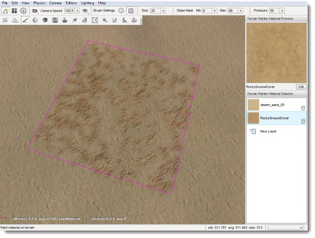
You should have noticed that your brush clamped to the terrain as long as the cursor was over the block. This happens regardless of any terrain modification or elevation occurring, as shown in the following example. Notice how the brush distorts to wrap around the elevated terrain.
(click to enlarge)
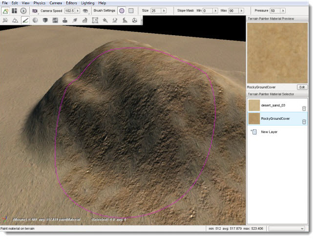
Even though you just paved a large section of rock material, you can still paint over it. Decrease the Brush Size to approximately 9, so we can paint a more exact line of terrain.
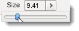
We are going to paint a path over our rocky area. In the Terrain Painter palette, select the first material (desert_sand_03 in this image).
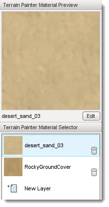
Now, using your mouse cursor move the brush to the edge of our rocky area. You can start it just before the rocky area, or even on top of it.
(click to enlarge)
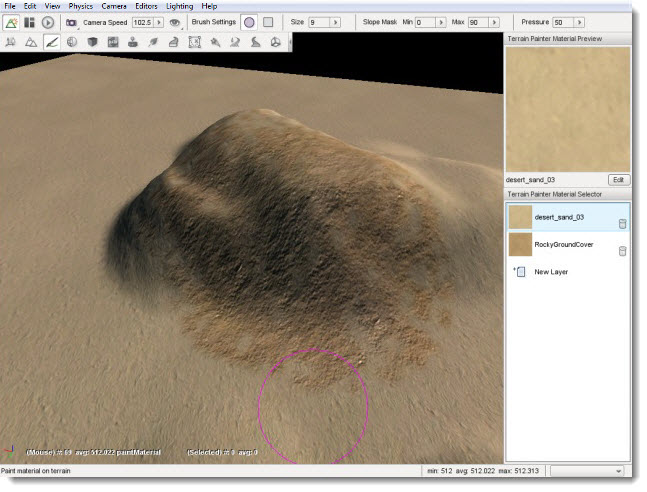
Click and hold down the left mouse button to begin painting then sweep your mouse in a curving motion across the rocky area. When you are finished, let go of the mouse and examine or your winding path made of grass.
(click to enlarge)
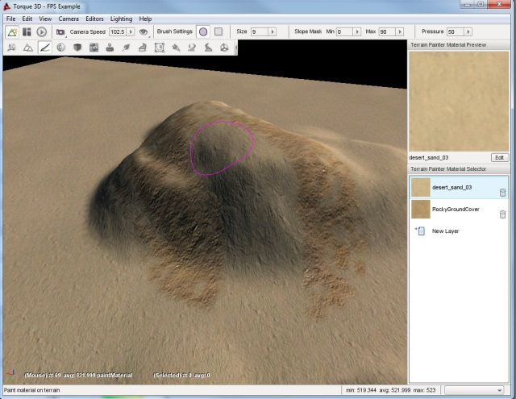
If you were to drop down to the player's camera view, you can see where the two TerrainMaterials meet each other after editing.
(click to enlarge)

Take the time to experiment with different brush sizes and
shapes to see what kind of patterns you can come up with. When you are
ready, read on to learn how to add a new TerrainMaterial with higher
quality and detail.
Conclusion
This article walked you through the Terrain Painter's interface,
typical usage, and TerrainMaterial system. Use in conjunction with the
Terrain Editor, you can fabricate some amazing and realistic terrain
for your game. Remember to save your work often and do not be afraid to
experiment first.
|
{kind=link}
{kind=link}
{kind=link}
{kind=link}
{kind=link}
{kind=link}
{kind=link}
{kind=link}